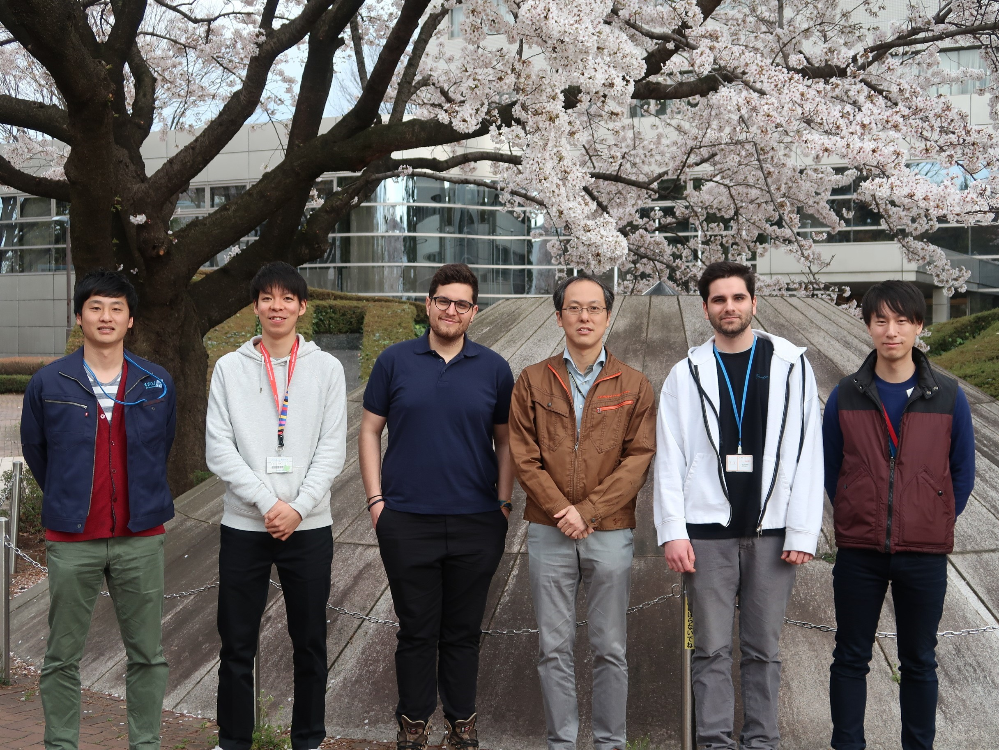

JAP
JAPWelcome to Spaceflight Mechanics and Exploration Systems Laboratory

The Spaceflight Mechanics and Exploration Systems Laboratory (Tsuda Laboratory) is affiliated with The Graduate University for Advanced Studies, SOKENDAI and the Institute of Space and Astronautical Science (ISAS). We conduct unique research and project activities in ISAS. Our research focuses on the application of Astrodynamics (Space Flight Mechanics) to real exploration missions. These include, but are not limited to, orbital design of deep space exploration satellites and probes, research of Solar System exploration methods and guidance, navigation and control systems for spacecraft. We carry out experimental and analytical approaches to spacecraft system design.
The research topics are always aimed at the connection between actual engineering applications and theoretical approaches to the problems. Some of these research projects carried out together with the laboratory students are:
- Development of a 10cm class microsatellite 'Cubesat'.
- Deployment experiment of a Solar Sail using Sounding Rockets and Balloons.
- Asteroid probe spacecraft 'Hayabusa'.
- Small Solar Power Sail Demonstrator spacecraft 'IKAROS' (Interplanetary Kite-craft Accelerated by Radiation Of the Sun).
- Asteroid probe spacecraft 'Hayabusa 2'.
In the laboratory, you can engage in practical research and development through projects with ISAS.
Students belonging to the Tsuda Laboratory are working in collaboration with the Kawaguchi Laboratory and Kawakatsu Laboratory of the University of Tokyo and SOKENDAI. Research consultations with diverse professional researchers, engineers, and staff at the Institute for Space and Astronautical Science is easily available for all students. This environment allow students to not only conduct research, but also be actively involved in ISAS projects and the creation and design of future missions of the agency. This experience is unique to students in ISAS, and not easy to come by at other University laboratories.
